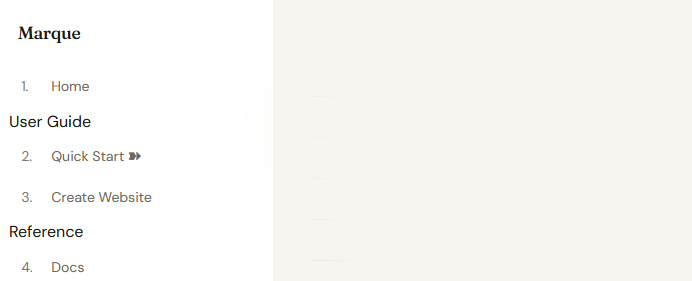
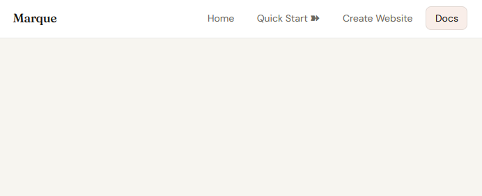

Layouts
Layouts behave a bit like themes, but they solve a different problem. Themes control the site's visual styling, whereas layouts decide what appears automatically and where it sits. This page uses the topnav layout on purpose, whereas the rest of this site uses sidebar.
sidebar
The sidebar layout places the navigation on the left-hand side of the page. The site title sits at the top, the main links appear underneath, and section headings are visible. The page content then sits to the right of the sidebar.

topnav
The topnav layout places the navigation bar at the top of the page. The site title appears on the left and the main links sit on the right. Hovering over the main buttons reveals subsections. Section headings are not shown in the same way, and the page content appears below the navigation bar.

When in doubt, consider the type of site you're building. If you have a large number of pages (e.g., a documentation site) and want to properly order content, the sidebar layout is a good choice. If you have fewer pages (e.g., a portfolio), want to maximise horizontal space or simply want a classic website feel, the topnav layout may be a better fit.
navigation.mq used for these examples
[Home](index.mq)
Start Here # only shown as a heading in sidebar
[Quick Start](quickstart.mq)
[Create Website](create.mq)
Docs # only shown as a heading in sidebar
[Docs](docs.mq)Shared shell: common.css, index.html, and index.js
The layouts/ folder still contains the shared HTML shell, but it is no longer the only shared layer. common.css provides the site-wide fallback theme and built-in directive styling, index.html defines the structure of every page, and the layout CSS files (sidebar.css and topnav.css) only handle placement and layout-specific behaviour. A small runtime in index.js handles the interactive behaviour of the navigation bar, such as toggling it on mobile and positioning submenus.
layouts/index.html
This is the HTML frame around every page. It defines the elements that always exist:
- the site navigation (
.mq-nav) - the main content area (
.mq-main) - the footer (
.mq-footer)
It also injects the build-time values that Marque generates for each page:
{{ common_css }}: the shared fallback stylesheet{{ layout_css }}: the active layout stylesheet{{ theme_css }}: the active theme stylesheet{{ nav }}: the rendered navigation links{{ content }}: the page body rendered from.mq{{ page_nav }}: previous / next page links{{ document_title }},{{ site_title }},{{ description }}
layouts/index.js
This file is intentionally small. It handles the shared interactive behaviour used by layouts:
- mobile nav toggle open / close
- submenu positioning near the viewport edge
- closing nav menus on click,
Escape, or resize - code block copy button behaviour
Most layout work still happens in CSS. index.js only supports the interactive pieces.
The important structure
<nav class="mq-nav">
<a class="mq-nav-brand" href="/">{{ site_title }}</a>
<button class="mq-nav-toggle" ...>☰</button>
<div class="mq-nav-links">{{ nav }}</div>
</nav>
<main class="mq-main"{{ page_main_style }}>
{{ content }}
{{ page_nav }}
</main>This structure is the contract the layout CSS relies on. common.css styles the shared baseline, then topnav.css and sidebar.css place that shell differently.
When to edit it
Edit layouts/index.html when you want to change what appears on every page, for example:
- adding a persistent banner or footer section
- changing where the brand or page navigation renders
- inserting extra wrappers that every layout should share
Edit sidebar.css or topnav.css when the HTML structure is already correct and you only want to change placement, spacing, or responsive behaviour.
For developers
In the Marque repository, the shared fallback theme lives in template/common.css, while layouts live in template/layouts/ and are copied into each new project at marque new <name>. That folder owns the shared HTML shell (index.html), the shared runtime (index.js), and the layout-specific CSS files like sidebar.css and topnav.css. When creating new layouts, make sure your CSS matches the classes used in the shared layout shell rather than re-implementing theme styles there.
```layout
template/
├── common.css
├── layouts/
│ ├── index.html
│ ├── index.js
│ ├── sidebar.css
│ └── topnav.css
└── themes/
└── *.css